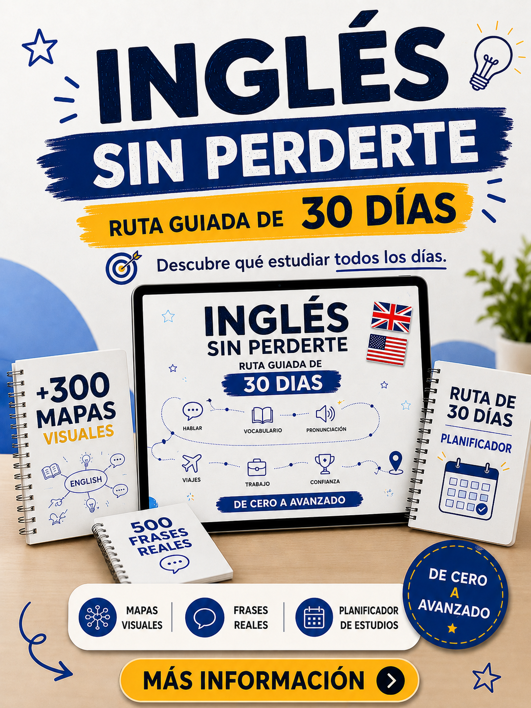
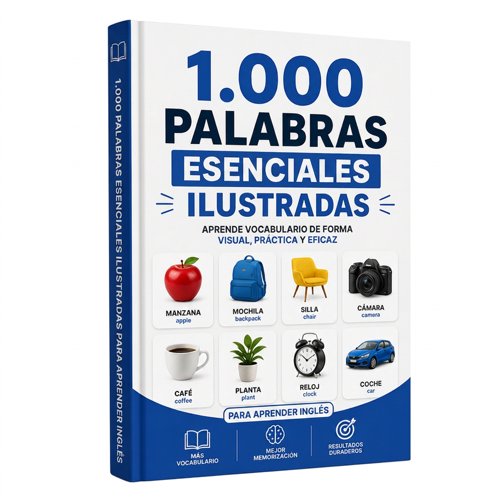
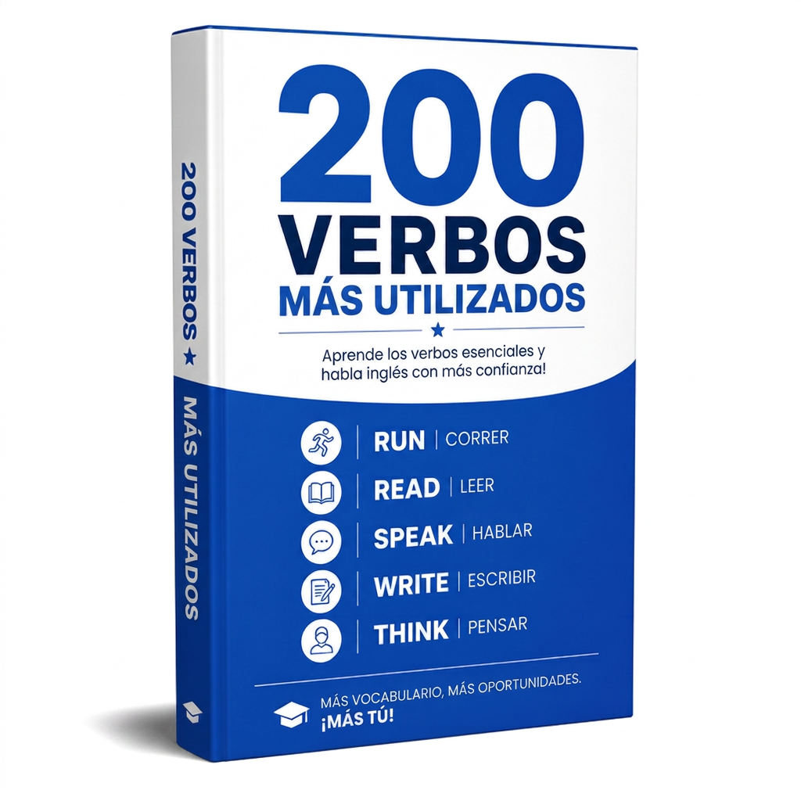
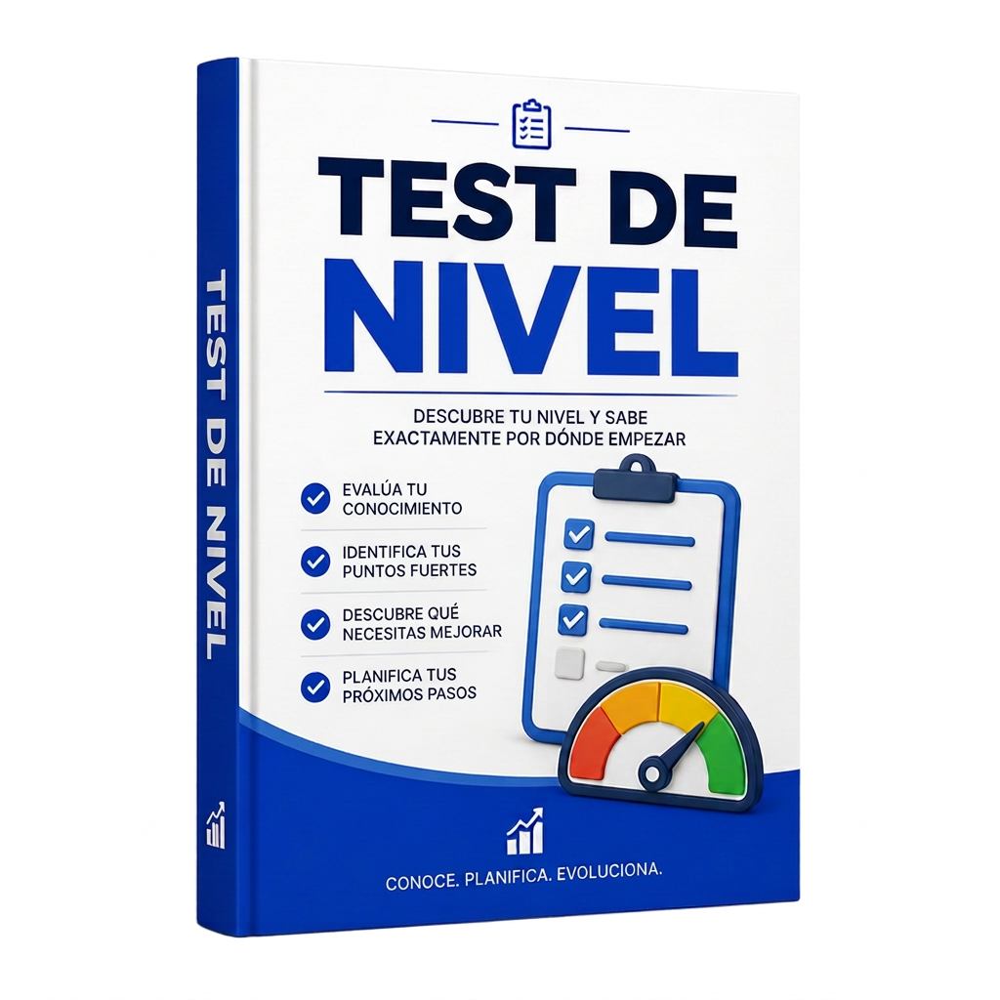
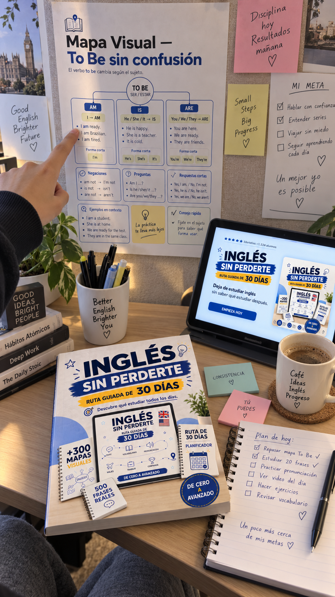
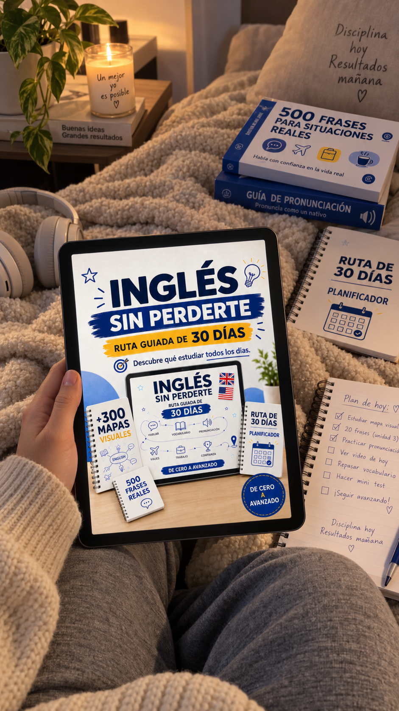
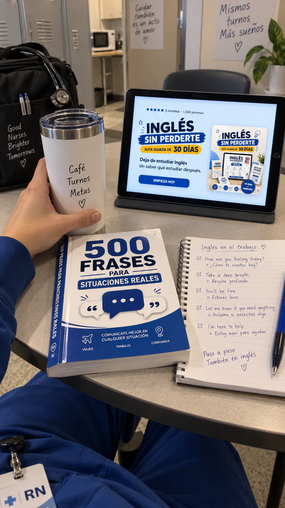
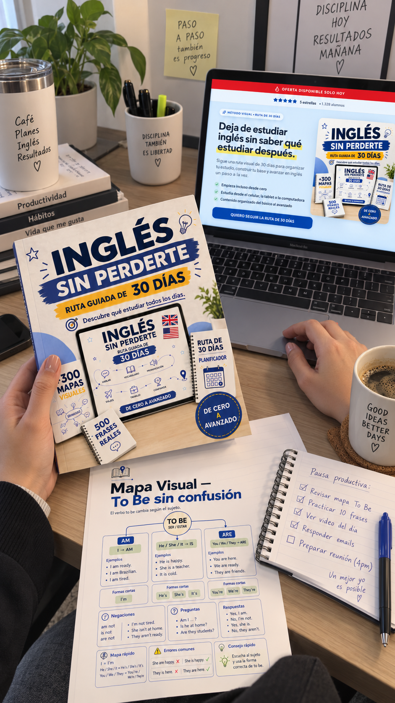
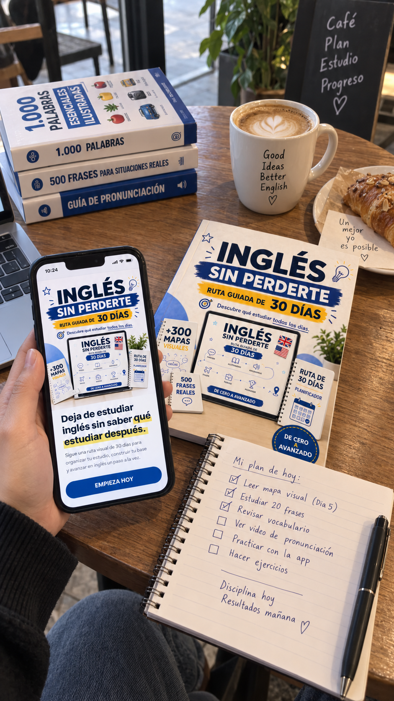
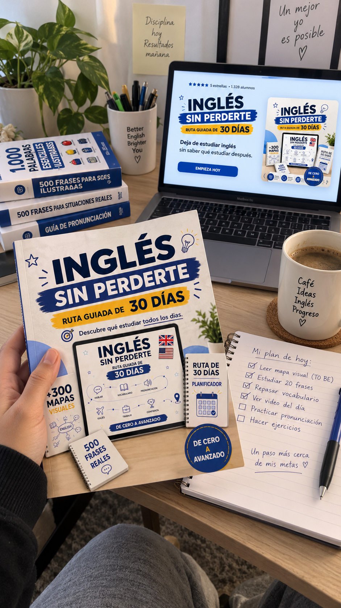

Oferta disponible solo hoy
Deja de estudiar inglés sin saber qué estudiar después.
Sigue una ruta visual de 30 días para organizar tu estudio, construir tu base y avanzar en inglés un paso a la vez.
En vez de saltar entre videos, aplicaciones y contenidos aleatorios, recibes un camino organizado con mapas visuales, vocabulario, frases, pronunciación y herramientas prácticas para saber exactamente dónde empezar y qué estudiar después.
- Empieza incluso desde cero
- Estudia desde el celular, la tablet o la computadora
- Contenido organizado del básico al avanzado
Pago único • Acceso digital • Garantía de 7 días

El verdadero problema
Quizá el problema no sea falta de esfuerzo. Es estudiar sin una ruta.
Ves una clase del verbo to be.
Después encuentras un video de phrasal verbs.
Abres una aplicación.
Guardas una lista de palabras.
Empiezas otro curso.
Al final acumulaste contenido... pero aún no sabes si estás estudiando en el orden correcto.
El mecanismo
En vez de estudiar al azar, sigues una ruta.
Días 1–5
Fundamentos esenciales
Días 6–10
Rutina y construcción de frases
Días 11–15
Descripción, gustos y comunicación
Días 16–20
Situaciones prácticas
Días 21–25
Pasado, futuro y expansión
Días 26–30
Conexión, conversación y repaso
Todos los días sabes cuál es el siguiente paso.
Aprendes.
Practicas.
Repasas.
Aplicas.
Y luego avanzas.
Pago único • 7 días de garantía • Material 100% digital
Por dentro del material
Antes de comprar, mira lo que vas a recibir.
Material visual, organizado y desarrollado para consultarse rápidamente cada vez que necesites repasar.
Toca la imagen para ampliarla.
Valor normal US$ 29,90
US$ 5,90
US$ 5,90 • Pago único • 7 días de garantía
360 mapas visuales
La ruta termina. Tu evolución continúa.
Después de los primeros 30 días, tienes 360 mapas visuales organizados en 5 niveles para profundizar exactamente donde lo necesitas.
NIVEL 1 — EMPEZANDO DESDE CERO
Construye la base que sostiene todo lo demás.
NIVEL 2 — CONSTRUYENDO FRASES
Deja de aprender palabras sueltas y empieza a armar frases.
NIVEL 3 — CONVERSACIÓN
Convierte tus frases en interacciones.
NIVEL 4 — INGLÉS INTERMEDIO
Conecta ideas y habla de situaciones más completas.
NIVEL 5 — INGLÉS AVANZADO
Gana precisión y amplía tu forma de expresarte.
La diferencia
La diferencia está en la organización.
Material común
- decenas de archivos sueltos
- ningún orden claro
- tú tienes que decidir qué estudiar
- fácil de abandonar
- exceso de información
Inglés Sin Perderte
- ruta de 30 días
- secuencia clara
- mapas organizados por nivel
- repaso planificado
- planificador
- diagnóstico final
- herramientas para situaciones reales
“No recibes simplemente información. Recibes una estructura para saber qué hacer con ella.”
9 bonos incluidos
Y la ruta no viene sola.
Los 9 bonos están incluidos sin costo adicional para reforzar vocabulario, pronunciación, frases reales y organización del estudio.

1.000 palabras esenciales ilustradas
Vocabulario organizado por contexto para ayudarte a reconocer y usar las palabras más útiles.
Bono incluido

500 frases para situaciones reales
Frases para conversaciones, pedidos, compras, transporte, trabajo y situaciones cotidianas.
Bono incluido

Guía de pronunciación
Sonidos esenciales, pares mínimos, ritmo, acentuación, reducciones y connected speech.
Bono incluido

200 verbos más utilizados
Forma base, pasado, participio, ejemplos y combinaciones frecuentes.
Bono incluido

150 phrasal verbs
Expresiones del inglés cotidiano con significado y aplicación.
Bono incluido
Inglés para viajes
Aeropuerto, migración, transporte, hotel, restaurante, compras y situaciones de supervivencia.
Bono incluido

Inglés para entrevistas y trabajo
Entrevistas, reuniones, tareas, plazos, correos y comunicación profesional.
Bono incluido

Planificador de estudio
Planificación semanal, repaso espaciado, seguimiento y nuevos ciclos de 30 días.
Bono incluido

Test de nivel
Test con diagnóstico para identificar los puntos que necesitan repaso.
Bono incluido
Pago único • 7 días de garantía • Material 100% digital
Lo que cambia
Todos los días sabes cuál es el siguiente paso.
- Abres el material y sabes exactamente qué estudiar hoy.
- Identificas en qué nivel estás y qué repasar.
- Dejas de depender de búsquedas aleatorias cada día.
- Creas una rutina de estudio previsible y constante.
Prueba social
Lo que opinan los estudiantes

“Ya había intentado empezar unas cinco veces. Con la ruta, abro el día correcto y estudio. En dos semanas aprendí más que en meses saltando de video en video.”

“Lo que me convenció fue la simplicidad. Los mapas explican en una página lo que antes me tomaba horas entender. Aprendizaje rápido y sin dolor de cabeza.”

“Siempre me trababa al armar una frase. Después del bloque de construcción de frases finalmente entendí la lógica y empecé a escribir sola.”

“Estudio en el celular durante el descanso del trabajo. Son sesiones cortas, pero todos los días. Saber exactamente qué hacer lo cambia todo.”

“Las frases para situaciones reales me salvaron en el viaje. Fácil, directo y sin el peso de un curso enorme que nunca terminaba.”

“El test de nivel mostró mis vacíos y repasé solo lo que necesitaba. Mucho más rápido que estudiar todo otra vez desde cero.”
Acumulación de valor
Mira todo lo que recibes hoy
- 📅 Ruta Guiada de 30 Días
- 📚 Mapas Visuales organizados en 5 niveles
- 🎁 1.000 palabras esenciales ilustradas
- 🎁 500 frases para situaciones reales
- 🎁 Guía de pronunciación
- 🎁 200 verbos más utilizados
- 🎁 150 phrasal verbs
- 🎁 Inglés para viajes
- 🎁 Inglés para entrevistas y trabajo
- 🎁 Planificador de estudio
- 🎁 Test de nivel
Oferta disponible solo hoy
Valor normal
US$ 29,90
Hoy pagas solo
US$ 5,90
Los 9 bonos están incluidos sin costo adicional.
Pago único. Sin mensualidad. Acceso digital.
Quiero Inglés Sin PerderteTienes 7 días para conocer el material.
Revisa el contenido con tranquilidad. Si dentro del plazo de garantía decides que no es para ti, podrás solicitar el reembolso según las condiciones de la plataforma de pago.
Pago único • 7 días de garantía • Material 100% digital
Entrega
¿Cómo lo recibes?
PASO 1
Finaliza el pago.
PASO 2
Tras la confirmación, recibes las instrucciones de acceso.
PASO 3
Abre el material desde el celular, la tablet o la computadora y empieza por la Ruta Guiada.
Dudas frecuentes
Preguntas que quizá tengas
Pago único • 7 días de garantía • Material 100% digital
Puedes seguir intentando descubrir solo qué estudiar... o puedes empezar con una ruta ya organizada.
Tu siguiente paso no tiene que ser buscar otro video, otra lista u otro método.
Abre el Día 1.
Sigue la secuencia.
Repasa.
Practica.
Y sigue avanzando.
US$ 5,90 • Pago único • Garantía de 7 días
adquirió la oferta
hace minutos
Inglés Sin Perderte
US$ 5,90